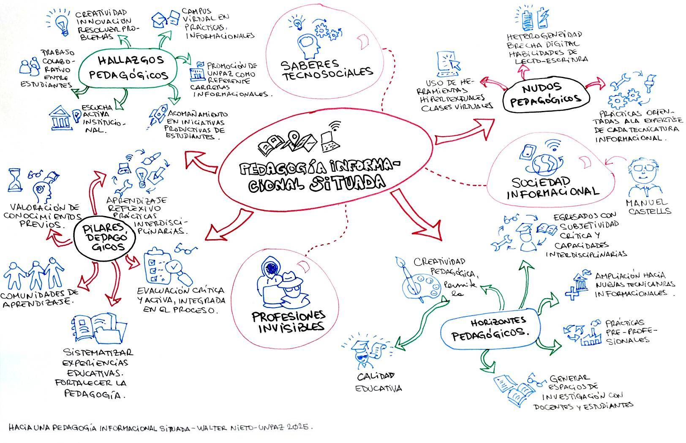

Hacia una pedagogía informacional situada
Reflexiones a partir de una experiencia de formación docente.
Autores: Daniel Daza, Marian Lettieri y Fernando Peirone.
 audio
audio  resumen
resumen  original
original  actividad
actividad

Contexto y objetivo del artículo
El artículo presenta reflexiones surgidas de una experiencia de formación docente desarrollada a comienzos del año dos mil veinte, en el marco de las tecnicturias informacionales dictadas en la Universidad Nacional de José C. Paz (UNPAZ). El propósito es analizar y proponer pilares para una pedagogía informacional situada, reconociendo el rol de la educación pública en la formación de profesionales tecnosociales dentro de la sociedad informacional.
Estructura del análisis
Uno. El marco socioeconómico: la sociedad informacional
El agotamiento del modelo industrial y del Estado de bienestar, a partir de la década de mil novecientos setenta, dio lugar a una reestructuración capitalista centrada en el desarrollo científico-tecnológico, donde las Tecnologías de la Información y la Comunicación (TIC) son predominantes.
-
Se define una nueva lógica productiva basada en el conocimiento y el procesamiento de información (capitalismo informacional, semiocapitalismo).
-
Manuel Castells y Howard Rheingold describen un nuevo orden social y un medio de organización amplificado por Internet, que genera nuevas demandas productivas y saberes tecnosociales.
-
Estos saberes, en gran medida, se construyen fuera del sistema educativo formal. El sector privado crea sus propios dispositivos de formación, trasladando los criterios formativos al mercado.
Dos. Génesis de las tecnicaturas informacionales en la UNPAZ
En el año dos mil catorce, un proyecto conjunto entre la Cámara de Diputados, ministerios, universidades y asociaciones civiles buscó relevar áreas de vacancia informacional y profesiones invisibles.
-
El objetivo era sistematizar estos saberes en propuestas de educación superior (diplomaturas y tecnicaturas), reconociendo su valor académico y profesional.
-
En dos mil quince se propusieron diecinueve tecnicaturas y dos diplomaturas.
-
La UNPAZ participó activamente, pero enfrentó el desafío de crear marcos pedagógicos y didácticos adecuados para estos saberes, compitiendo con certificaciones privadas y saberes informales, desde una mirada crítica y de justicia social.
Tres. La formación docente y los pilares pedagógicos provisorios
En dos mil dieciséis, la UNPAZ abrió tres tecnicaturas: Comercio Electrónico, Gobierno Electrónico e Informática Aplicada a la Salud. Los equipos docentes observaron problemáticas en la enseñanza de saberes tecnosociales (prácticos, hipertextuales, con escasa discursividad).
Se organizó una formación docente de cuatro encuentros (presenciales y virtuales) que tuvo como principal resultado la elaboración colectiva de cinco pilares pedagógicos provisorios:
Primer pilar. Valoración de los conocimientos previos de los estudiantes. Reconocer y poner en valor los saberes que los estudiantes ya poseen, aunque no siempre puedan verbalizarlos, para acompañar la emergencia de nuevos sentidos.
Segundo pilar. Promover aprendizajes reflexivos basados en prácticas y proyectos interdisciplinarios. Integrar teoría y práctica a través de proyectos desafiantes vinculados a problemáticas del mundo real.
Tercer pilar. Formación de comunidades de aprendizaje como estrategia didáctica. Favorecer la autoorganización en torno a problemas comunes, con interacción entre participantes de distintos niveles de conocimiento.
Cuarto pilar. Evaluación activa e integrada a los procesos de enseñanza y de aprendizaje. Implementar una evaluación crítica, reflexiva, que incluya autoevaluación y coevaluación para profundizar la comprensión.
Quinto pilar. Sistematización de las experiencias educativas para fortalecer la pedagogía. Ante la falta de marcos preexistentes, se alienta a los docentes a reflexionar, producir y registrar sus prácticas para construir conocimiento pedagógico.
Nudos, hallazgos y horizontes pedagógicos
A partir de los pilares, se profundizó el análisis con tres categorías para examinar la práctica cotidiana:
Nudos (problemas y dificultades)
-
Potenciar el uso de herramientas hipertextuales: Para articular creativamente lo virtual y lo presencial, reconociendo los saberes previos de los estudiantes.
-
Heterogeneidad en habilidades: Diferencias marcadas en lectoescritura, técnicas de estudio y manejo tecnológico, que exigen dinámicas adaptativas y motivadoras.
-
Vinculación teoría-práctica: Cómo conectar efectivamente contenidos académicos con prácticas profesionales específicas y analizar críticamente la tensión entre soberanía tecnológica y el utilitarismo de las "profesiones invisibles".
Hallazgos (potencialidades y aspectos positivos)
-
Trabajo colaborativo: Se destacó el vínculo solidario entre estudiantes y los buenos resultados de dinámicas que promueven el debate y la creatividad en casos prácticos.
-
Escucha activa institucional: La capacidad de la institución para recoger e integrar los intereses de los estudiantes en las prácticas pedagógicas.
-
Acompañamiento a iniciativas estudiantiles: Valoración del apoyo a proyectos sociales, laborales y de investigación surgidos desde los estudiantes.
-
Rol de referencia regional: La UNPAZ como referente en los campos profesionales de las tecnicaturas.
-
Campus virtual empático: Su uso como recurso ajustado a las prácticas informacionales de los estudiantes.
Horizontes (sueños y metas por explorar)
-
Desarrollar la creatividad pedagógica para mejorar la calidad educativa.
-
Formar egresados con subjetividades críticas e interdisciplinarias.
-
Ampliar la oferta de tecnicaturas y crear trayectos de continuidad hacia licenciaturas.
-
Promover prácticas preprofesionales en sectores públicos y privados.
-
Generar espacios de investigación conjunta docente-estudiante.
-
Incorporar perspectivas de género, diversidad y enfoques políticos colaborativos situados en el sur global.
Conclusión y palabras finales
El artículo cierra remarcando el rol central de la universidad pública en una sociedad desigual y en transformación.
-
Es imprescindible sistematizar los saberes tecnosociales dentro de marcos pedagógicos innovadores y democráticos.
-
Los pilares, nudos, hallazgos y horizontes identificados son caminos posibles para formar profesionales críticos y reflexivos.
-
Una inclusión verdaderamente transformadora debe incorporar debates sobre género y diversidad, apoyándose en miradas situadas.
-
Esta experiencia muestra el compromiso del Estado y la educación pública para impulsar la innovación y fortalecer la cohesión de la comunidad educativa.
-
La construcción de una pedagogía informacional situada es un proceso abierto que busca promover el diálogo entre la educación y las industrias del conocimiento, contribuyendo a una educación comprometida con la realidad actual.